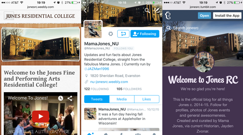
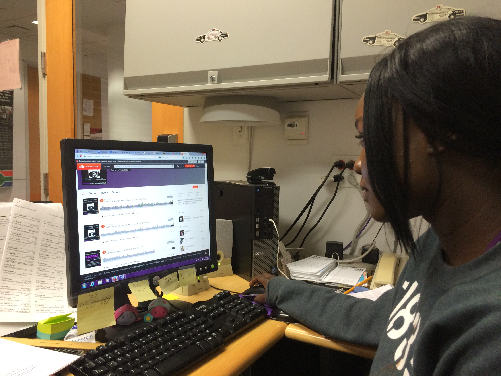

I'm Aditi Bhandari and I'm a junior at Northwestern University studying journalism and design (with a dash of gender studies)! I'm currently the Digital Product Manager for the North By Northwestern magazine and a student fellow at the Knight Lab.
I like to write and produce multimedia stories, but code and UI/UX design is what I'm most excited about. If you like creative storytelling, homemade chai or critically consuming pop culture, we should probably be friends.
As the Digital Product Manager for the North By Northwestern quarterly print magazine, I worked with a team of designers to adapt the print magazine for an online audience. I designed, and created web-exclusive content for, stories about:
"The Flux" was the central theme of the Advanced Interactive Storytelling and Design class I took last spring. My group reported on the different perceptions towards HIV/AIDS across generations of gay men using their personal narratives.
I've been working on Learn.KnightLab since I joined the Lab as a student fellow this year. It's a cool way for journalism students to learn how to code hands-on through projects and tutorials.
This October, I went to a women's hackathon at USC Annenberg, about immersive VR storytelling. My group's pitch received an honourable mention and the judges called the website I built a "cool website".
In the spring of 2014, the Jones Fine and Performing Arts Residential College was preparing for its new residents. I created this video to welcome them to their new home.
The Residential College Board held a Field Day event in the spring of 2014 and held a competition between the 11 participating dorms. This is the trailer I made for Jones Residential College, which won the competition and earned us 50 points.
I started building up IndieU's multimedia presence by creating a video interview with DJ Rucku5. Rucku5 was the winner of the NU Dance Marathon Battle of the DJs.
I took a journalism class on Enterprise Reporting in Diverse Communities and produced this audio clip as part of a larger series on Native American Narratives in Chicago. Listen to what is means to grow up as a Native American in Chicago.
This story combines two of my favourite things; music and environmental activism. I created this audio story for In Our Nature Magazine following a performance event of protest music from the last 100 years.
Projects

Brand Building: Jones Residential College
When I was elected the Historian of my dorm in Spring 2015, I decided to revamp our website and create a social media presence on Twitter and Tumblr that residents could follow for updates and media. The website I designed won awards for Best Website and Most Improved Website from the Residential College Board, and the social media pages are now run by the current Historian.
Design 395: Data As Art
My team is building a visualization of transport and socioeconomic data in Chicago for the final project for my Media Design class. It's currently a work-in-progress, but here's the project website that I built.

Journalism 376: Media Design
I'm creating this piece as the final project for my Media Design class. It's currently a work-in-progress, so check back in a few days for the final version!
I attended the very first She Hacks Chi hackathon dedicated to closing the gender gap in STEM fields. My group pitched "Finding Ruby Neutrino," a quest-based computer game with challenges inspired by various STEM fields.